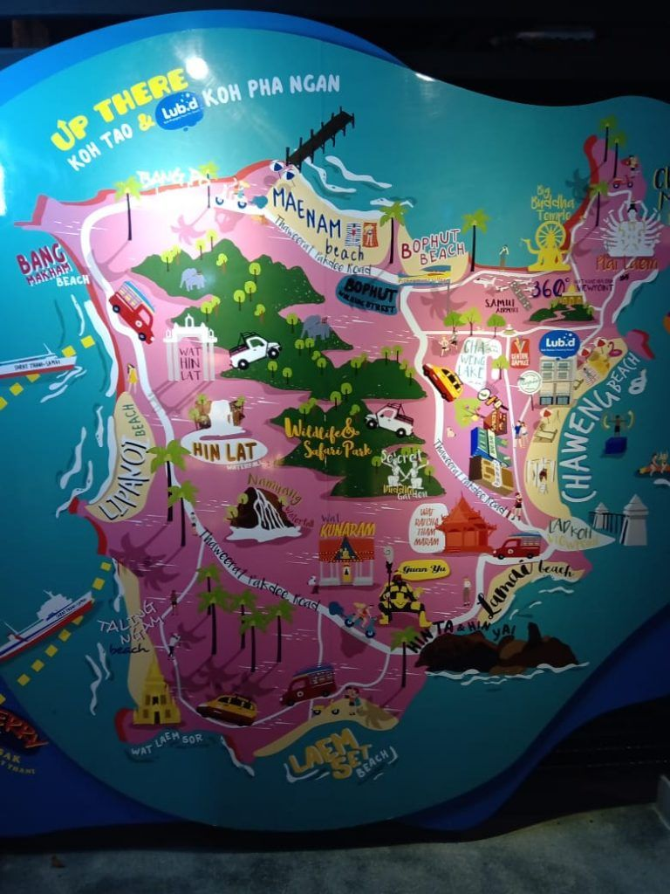
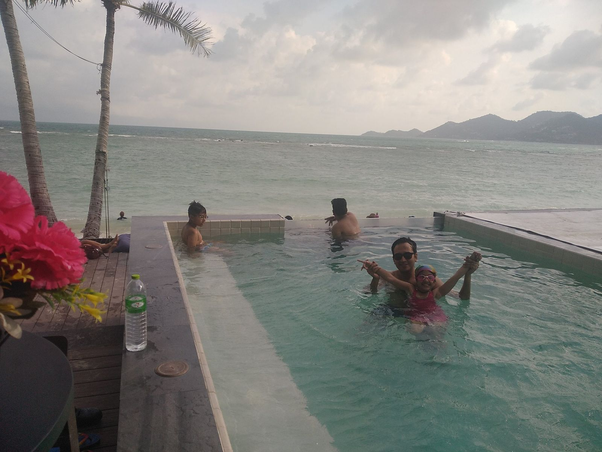
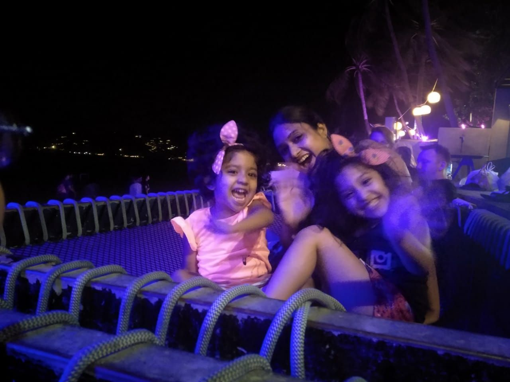
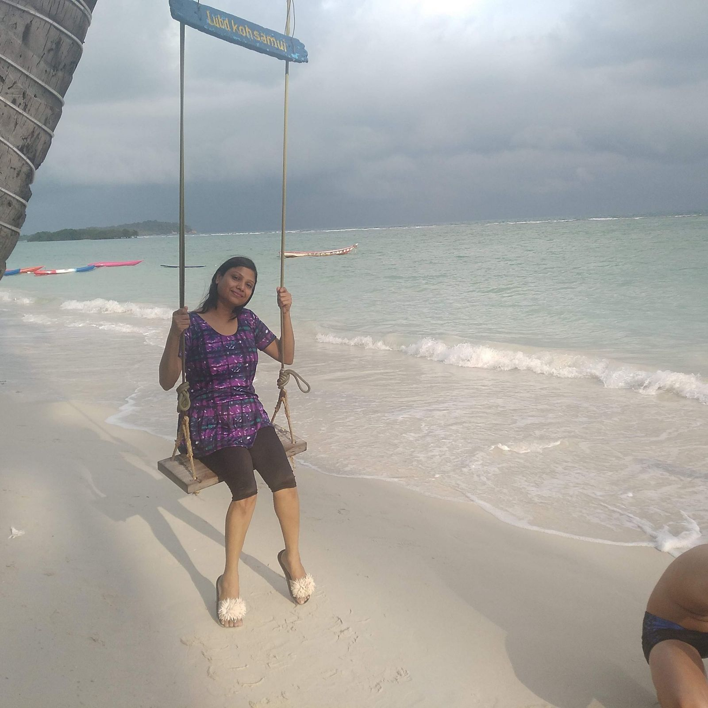

Written after our trip, in March 2020. Prices, visa rules and opening times may have changed since, so please check before you book.
This blog gives details on why Koh Samui is one of the best beaches in Thailand and how we (Indian vegetarian family with kids) enjoyed.
While planning our Thailand trip, we were looking for a beach destination that had white sand, crystal clear water and was relatively unexplored. We already had Phuket and Pattaya in our list but these were too commercialized and crowded while we wanted a less explored beach.
After much research, we shortlisted Koh Samui, Koh Tao and Koh Phangan. These are 3 islands on the eastern coast of Thailand and are less famous tourist spot especially for Indians who prefer Phuket/Krabi and Pattaya. However, the white sand and crystal clear water make these islands the picture-perfect places to be.
Finally, after surveying hotels and deals, we booked a hotel in Koh Samui which is the 2nd largest island and one of the best beaches in Thailand.
Table of Contents
How to reach Koh Samui
Being less popular has its costs. Since these are islands, It is difficult to reach Koh Samui/Koh Tao/Koh Phangan directly.
The easiest and quickest way is via a flight. Koh Samui has an airport but the flight tickets are too expensive.
A cheaper alternative is to catch flight/train/bus to Surat Thani. From there, go to the pier (ferry depot) and spend another 2-3 hours on the ferry to reach the island. In total, you will lose half day to reach the island from Surat Thani.
Note - You can get flight tickets between Bangkok and Surat Thani for dirt cheap prices (ours was around 600 INR per person all-inclusive). This way, you will save both money and time :)
There are multiple ferry operators between Surat Thani and the three islands. Popular are Seatran ferry, Raja Ferry, Songserm ferry. You may choose any one of these depending on your schedule and timings. However, remember to book the entire package - from Surat Thani airport/train station to Koh Samui hotel drop which will include your pickup from hotel/airport/train station, transfers to pier and ferry charges. Cabs are not available easily in Surat Thani and you will struggle if booking only ferry.
How we reached Koh Samui
In my previous blog, I had written about our Phuket experience and were planning to take a night bus from Phuket so that we can go sleeping and reach the islands in the morning via early morning ferry.
Related article => Our Phuket experience
However, there is no night connectivity to Surat Thani. All the travel operators depart from Phuket around 8 am in the morning and charge between 400 - 800 THB per person.
So, we started from our Phuket hotel around 8 am in a minibus (15 seater). Journey to Surat Thani took around 5-5.5 hours with a 20 min snack break in between. We reached our drop point in Surat Thani around 1.30 pm. Had to wait for about 45 min at that place to board another bus which took us to ferry port (called Pier in Thailand). This journey from Surat Thani to Donsak Pier took about 1 hour and we reached Pier around 3 pm. On reaching Pier, we were told that ferry is scheduled at 4 pm. So we had to wait for another 1 hour at the Pier.
Finally, we boarded the ferry around 4.15 and it departed around 4.30. It was a good motorboat having 2 airconditioned floors for seating. we along with many other passengers chose to sit outside at front of the boat to enjoy the sunset, the cool breeze and lovely view of ocean and mountains.
Journey from Donsak Pier to Koh Samui was supposed to take 1.5 hours but took 2 hours. We reached Koh Samui pier around 6.30 pm. Since we had already booked a drop to our hotel, our minibus was waiting at Koh Samui Pier and we reached our hotel on Chaweng beach around 8 pm.
Tip - when returning from Koh Samui/Koh Phongan to Surat Thani, check where your drop will be. If you are staying overnight in hotel near airport / railway station in Surat Thani, then best thing will be for you to go to airport/station and ask the hotel guy to pick you from there. We were cheated as the tour operator in Koh Samui said that we will be dropped at hotel. However, on reaching Surat Thani, bus driver dropped us on middle of road saying that hotel is nearby. We later realized that hotel was 8kms away and we were in middle of no-where without access to any cabs. Even our hotel phone was not reachable. Finally after struggling for about 1 hour, one gentleman gave us lift and dropped us to the hotel.
Where to stay
We stayed in Lub D hostel on Chaweng beach area of Koh Samui and it turned out to be a very happening area. There were night clubs, beach resorts and amazing nightlife. Plus the beach itself was amazing.

Our hotel's swimming pool was directly on the beach and we were hopping between swimming pool and ocean. The atmosphere was amazing with pool parties starting as early as 2pm in afternoon on few resorts. There were games like TT, billiards, foosball, air hockey which could be played free of cost. And there were amazing cots and beach chairs on which you can just lie and spend the entire day.
While we loved Lub D, we are thinking of staying in Ark Resort next time as most of the action happens there every day. Pool parties start at 2 pm every day and there are amazing fire shows in the night. Another good hotel worth considering is Al Resort. All these open directly on beach and result is sort of private beach for the hotels
Hotel Review
- Location – I will give LubD 10 marks on location convenience. It is right on the beach. The swimming pool and restaurant open up to the beach itself. You can choose to enjoy the beach and sunset from the infinity pool or from the restaurant itself. There is an Indian restaurant, bike rental, laundry shop & travel agency right next door to Lub D. 7-11 / FamilyMart, Night clubs (Hard Rock café and few others), as well as Central mall, were at about 10 min walking distance.
- Rooms – Lub D is one of the popular hostel chains in Thailand. We had booked one Deluxe room and one family room. But in spite of being a hostel, there is a high look and feel to the property. Room were small but neat and clean. Family room has one double bed and one bunker bed. Both the rooms also have balcony.
- Amenities – They have amazing amenities. There are 2 Swimming pool one of which opens on the beach. It has an attached bar and restaurant. There is a game zone where you can play TT, air hockey, Foose ball & billiards free of cost. They also do an induction session every day at 5pm where they tell you a few basic things about Thailand/Koh Samui and also serve welcome drink (mojito). Lub D also has different activities each night. There are beach parties, Beer Pong nights, Pub Crawl night, etc. Lub D also has washing machines where you can do your laundry on a payment basis



- Breakfast – Breakfast was a disappointing part of LubD. Being a hostel, it did not offer any buffet breakfast. Since we had booked deluxe and family rooms, breakfast was complimentary for us. However, we were told that only 1 item will be given for each guest and that too limited quantity. You cannot refill. Being vegetarians, our options were already limited and this left a bad experience. We had veg options to choose one dish among Avacado bread toast (2 pieces), fruit salad bowl, cheese pizza or waffles. Fruit juice and tea/coffee were unlimited. Somehow managed to fill our stomach.
- Price -In spite of being a hostel, LubD was pretty expensive. We got the deal in 5500 THB due to the Black Friday sale on their website. In general, their price for 1 Deluxe room and 1 Family room with breakfast is about 7500-8000/- THB. Only catch was that these were non-cancellable rooms.
- Drinking-Water Policy - They were very strict about water policy of 2 bottles per room per day. No replacements were given if you finish your bottle.
What we did in Koh Samui
Honestly speaking, we did not do anything. We just lazed on the beach and enjoyed hotel amenities. We had planned island tour and many things in Koh Samui but the beach and atmosphere was so amazing that we just spent all the time in hotel swimming pool and on beach :)
Things we missed
- Island hopping tours - to Koh Tao, Koh Phangan, Koh Nangyun, Pig island, etc
- Ang Thong National Marine Park - this is a must-visit. But it involves climbing lots of stairs and we were not in a mood to do that with kids
- Water activities - Snorkelling, Scuba Diving, Kayaking, Paddling, etc
- ATV Tours
- Full Moon / Half Moon / No Moon parties on Koh Phangan - Must visit if you don’t have kids. With kids, advisable to avoid it as there is too loud music and too many people smoking and drinking.
- Indoor sky diving
- Jungle safari
- Elephant Jungle sanctuary
Note - Koh Matsum is an nearby island which is also known as Pig Island. Many tours from Koh Samui also touch this island where tourists feed, play and swim with pigs. So if you dont like pigs, ensure that you do not opt for tour involving Pig Island
Food options
Chaweng has several Indian restaurants and hence you will not face problems finding veg food. We found the food to be good in Noor restaurant and Thai Pot curry restaurant near Lub D hostel.
Another must-try in Koh Samui is Mr. Tee Ice-cream rolls. This is a must-try for everyone. You will find it in many places and will cost 100 THB for 2 flavored ice cream.
Conclusion
If you are looking for an offbeat destination that is not too commercial but has beautiful beaches and lots of things to do, head to these islands. Reaching here is time-consuming but truly worth the effort.